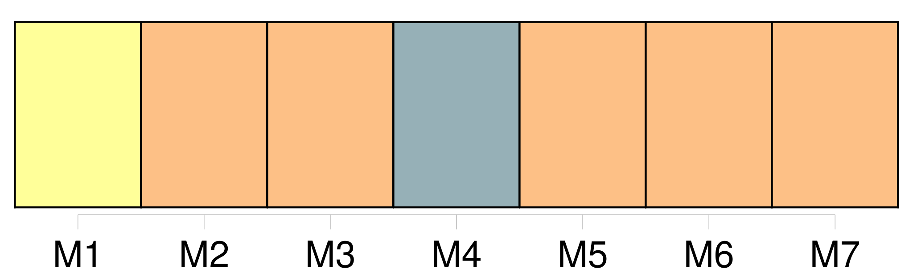
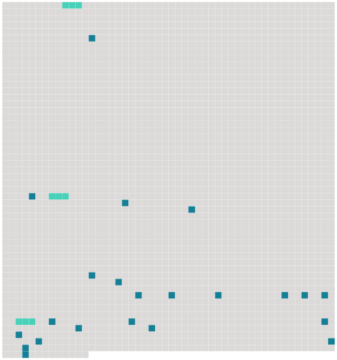

Longueur nb maillons : 25 mentions |
  |
Elle s'en alla enfin, heureuse de laisser [les deux hommes] ensemble. [18 phrases] [Ils] marchaient côte à côte, comme deux camarades, enjambant les paniers et les légumes. [54 phrases] — Un bon garçon, cet Alexandre, dit Claude, quand [ils] se retrouvèrent [tous les deux] sur le trottoir de la rue Rambuteau. [1 phrases]
Maintenant, si cela vous plaît, [nous] allons faire un tour dans les Halles. [3 phrases] [Ils] entrèrent sous une des rues couvertes, entre le pavillon de la marée et le pavillon de la volaille. [13 phrases] À tous les pas, maintenant, [ils] devaient s'arrêter. [1 phrases] Et, pour se garer des camions de la marée de plus en plus pressés et inquiétants, [ils] se jetaient sous les roues des camions du beurre, des œufs et des fromages, de grands chariots jaunes, à quatre chevaux, à lanternes de couleur ; des forts enlevaient les caisses d'œufs, les paniers de fromages et de beurre, qu'ils portaient dans le pavillon de la criée, où des employés en casquette écrivaient sur des calepins, à la lueur du gaz. [1 phrases] Enfin, [ils] se dégagèrent. Comme [ils] longeaient toujours la grande rue, [ils] marchèrent dans une odeur exquise qui traînait autour d' [eux] et semblait [les] suivre. [Ils] étaient au milieu du marché des fleurs coupées. [4 phrases] [Claude et Florent] revinrent sur [leurs] pas, flânant, s'attardant au milieu des fleurs. [Ils] s'arrêtèrent curieusement devant des femmes qui vendaient des bottes de fougère et des paquets de feuilles de vigne, bien réguliers, attachés par quarterons. Puis [ils] tournèrent dans un bout de rue couverte, presque désert, où [leurs] pas sonnaient comme sous la voûte d'une église. [Ils] y trouvèrent, attelé à une voiture grande comme une brouette, un tout petit âne qui s'ennuyait sans doute, et qui se mit à braire en [les] voyant, d'un ronflement si fort et si prolongé, que les vastes toitures des Halles en tremblaient. [1 phrases] Cependant, en face d' [eux] , rue Berger, les boutiques nues des commissionnaires, grandes ouvertes, montraient, sous la clarté vive du gaz, des amas de paniers et de fruits, entre les trois murs sales couverts d'additions au crayon.
Et comme [ils] étaient là, [ils] aperçurent une dame bien mise, pelotonnée d'un air de lassitude heureuse dans le coin d'un fiacre, perdu au milieu de l'encombrement de la chaussée, et filant sournoisement. [1 phrases] [Ils] causaient maintenant, en retournant sous les Halles. |
 |
La ressource peut être téléchargée sur la page Ortolang
Si vous avez des questions ou vous voyez des erreurs, merci d'envoyer un mail à silvia.federzoni89@gmail.com
Site développé par S. Federzoni (contact)